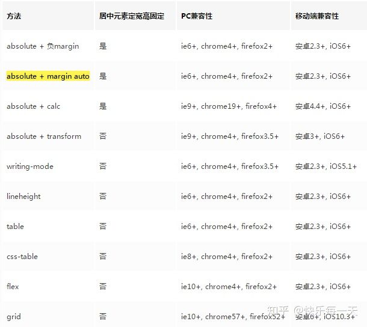

一、居中元素定宽高
方法一、margin:auto
当一个元素绝对定位时，它会根据第一个不是static定位的祖先元素定位，但里面的元素需要确定宽高
方法二、负margin法
我们首先用top:50%和left:50%让inner的坐标原点（左上角）移动到container的中心，然后再利用负margin让它往左偏移自身宽的一半，再往上偏移自身高的一半，这样inner的中心点就跟container的中心点对齐了
方法三、absolute+calc
既然top的百分比是基于元素的左上角，那么在减去宽度的一半就好了
二、居中元素不定宽高
方法一、table-cell
div上面的vertical-align: middle是控制垂直方向上的居中的，而text-align:
center是控制水平方向的。
方法二、弹性盒子法
方法三、absolute + transform
这个与上面的负margin有点类似，但这里不需要知道元素的具体宽高，transform会自动根据元素宽高
方法四lineheight
把box设置为行内元素，通过text-align就可以做到水平居中，但很多同学可能不知道通过vertical-align也可以在垂直方向做到居中
